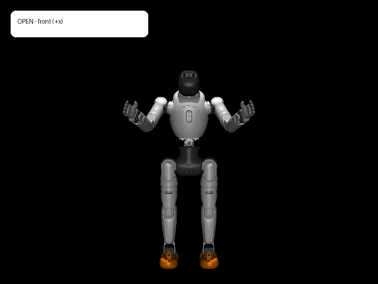
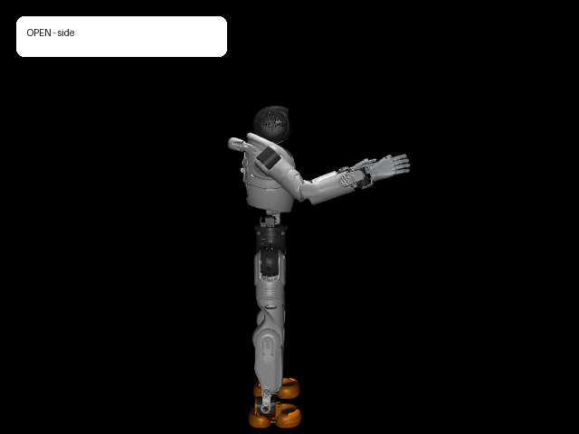
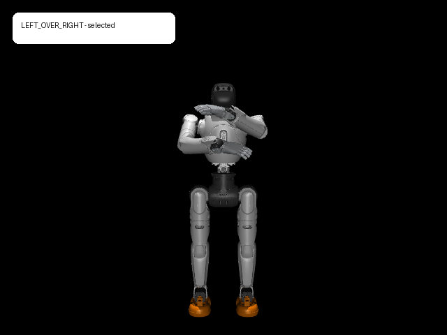
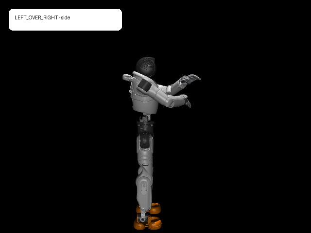
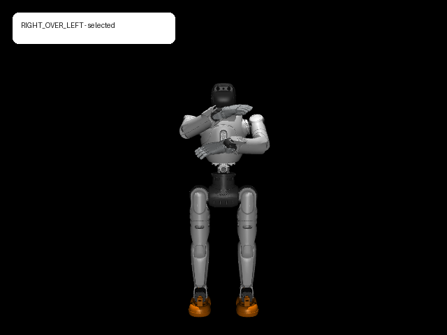
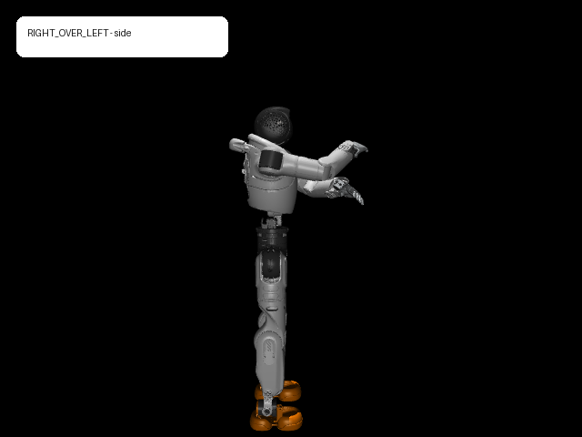
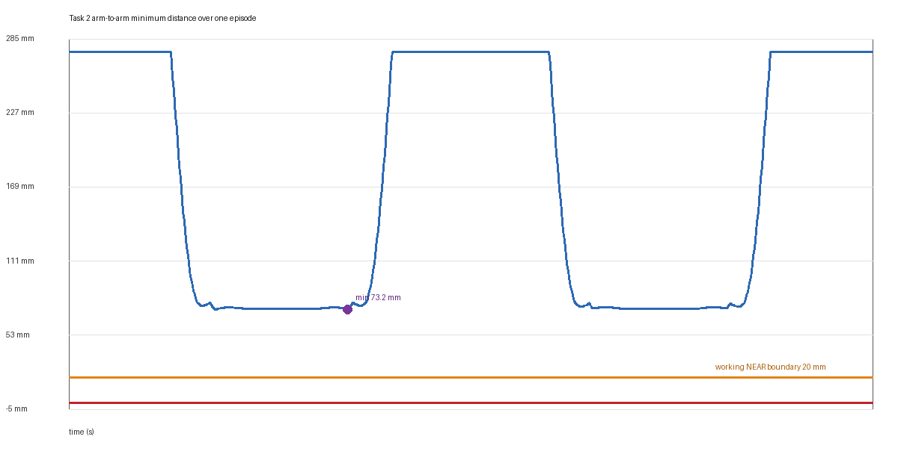
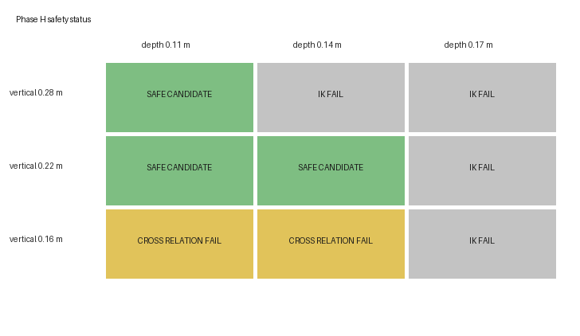
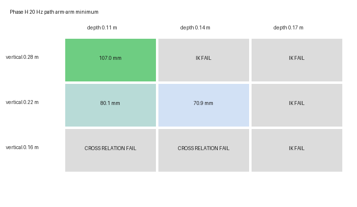
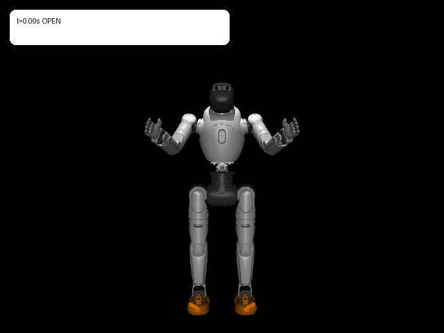

AgiBot X2 Ultra · 자기충돌 분석
양팔을 번갈아
X자로 교차하기
로봇 모델을 확인하고, 세 가지 핵심 자세를 만든 뒤, 모든 중간 프레임에서 관절 범위와 자기충돌을 검사했습니다. 충돌 데이터는 ACT의 정답 행동과 분리해 저장했습니다.

1. 한눈에 보기
결론부터 말하면, 요청한 X자 교차 동작을 만들었고 최종 5회 반복에서 모델상 관통이나 관절 한계 위반이 없었습니다.
2. 사용한 로봇 모형
공식 AgiBot X2 Ultra v1.3.0 MuJoCo 모델을 수정하지 않고 그대로 불러와 분석했습니다.
움직인 부분
- 왼팔 7개 관절
- 오른팔 7개 관절
- 총 14자유도만 변경
고정한 부분
- 이동식 기준 몸체
- 다리, 허리, 머리
- 모델의 기준 자세 qpos0 유지
모델 파일과 실행 환경
agibot_x2_urdf/X2_URDF-v1.3.0/x2_ultra.xmlSHA-256:
3be016eaa127c79ac547754d6e25c0930887efcf9577af33e9f5bb4ff4ed90d4Python 3.13.5 · NumPy 2.1.3 · MuJoCo 3.14.0
3. 목표 동작
한 동작 묶음은 아래 순서이며, 왼손과 오른손이 실제로 몸 중심선을 넘어가도록 했습니다.
손끝 높이만 바꾼 것이 아닙니다. 교차 부근에서 실제 팔 충돌 형상의 최근접 지점을 찾아 어느 팔이 위에 있는지 확인했습니다.
4. 무엇을 했나
A부터 I까지 모델 확인, 자세 생성, 전 경로 분석, 데이터 분리, 파라미터 탐색, 최종 반복 검증 순서로 진행했습니다.
5. 핵심 자세 결과
아래 이미지는 최종 H단계에서 선택한 자세입니다. 정면과 측면을 함께 확인할 수 있습니다.
펼친 자세

왼팔 위 교차


오른팔 위 교차


목표 위치와 실제 위치에 왜 오차가 생기나?
역기구학은 손 위치만 무조건 0 mm 오차로 맞추는 계산이 아닙니다. 이번 계산은 목표점에 가까이 가는 것과 관절이 기준 자세에서 지나치게 멀어지거나 한계에 붙지 않는 것을 함께 최적화했습니다.
D·E단계 결과를 따로 보면
| 구분 | D단계 · 왼팔 위 | E단계 · 오른팔 위 |
|---|---|---|
| 왼쪽 / 오른쪽 목표 오차 | 3.91 / 3.91 mm | 3.91 / 3.93 mm |
| 팔↔팔 최소거리 | 73.92 mm | 73.79 mm |
| 실제 최근접 표면 높이 차 | 62.43 mm | 61.80 mm |
| 가장 가까운 부분 | 왼쪽 팔꿈치 ↔ 오른쪽 손목 | 왼쪽 손목 ↔ 오른쪽 팔꿈치 |
| 결과 | 관통 없음 · 관절 한계 통과 | 관통 없음 · 관절 한계 통과 |
6. 자기충돌을 어떻게 계산했나
각 자세에서 모든 검사 대상 충돌 형상 쌍의 부호 있는 거리를 계산했습니다.
서로 떨어져 있음
표면이 맞닿음
서로 관통함
팔↔팔뿐 아니라 왼팔↔나머지 로봇, 오른팔↔나머지 로봇도 검사했습니다. 경로의 시작과 끝만 보는 것이 아니라 100 Hz의 모든 중간 프레임을 계산했습니다.

7. 데이터를 어떻게 나눴나
ACT가 충돌 자세를 정답 행동으로 모방하지 않도록 데이터의 용도를 명확히 분리했습니다.
분류 규칙
- 충돌: 검사 범위 중 하나라도 부호 있는 거리가 0보다 작음
- 근접: 관통은 없지만 팔↔팔 거리가 작업 2 임시 기준 20 mm 미만
- 안전: 관통이 없고 팔↔팔 거리가 20 mm 이상
- 회복: 근접 상태에서 승인된 안전 자세로 빠져나오는 검증된 궤적
8. H단계 파라미터 탐색
팔이 반대편으로 넘어가는 깊이와 위아래 간격을 3×3로 바꾸어 양쪽 교차 자세와 전체 경로를 다시 검사했습니다.
먼저 정한 판정 기준
| 검사 항목 | 기준값 | 기준을 둔 이유 | H단계 판정에 사용 |
|---|---|---|---|
| 손 대표점 위치 오차 | 5 mm 이하 | 목표 위치를 충분히 따라갔는지 판정하는 임시 역기구학 정확도 기준 | 초과하면 역기구학 실패 |
| 관절 한계 여유 | 0.020 rad 이상 약 1.15° | 수치해가 관절 끝에 붙는 것을 막기 위한 임시 여유 | 미달하면 정적 검사 실패 |
| 몸 중심선 교차 깊이 | 최소 0.10 m | 손이 단순히 가운데에 모인 것이 아니라 실제로 반대편까지 넘어갔는지 확인 | 미달하면 교차 관계 실패 |
| 최근접 팔 표면 높이 차 | 최소 0.04 m 40 mm | 실제 교차 지점에서도 어느 팔이 위인지 명확히 구분하기 위한 임시 동작 기준 | 미달하면 교차 관계 실패 |
| 정지·경로 최소거리 | 0 m 이상 | 부호 있는 거리가 음수이면 충돌 형상이 서로 관통한 것으로 판정 | 음수 프레임이 있으면 실패 |
| 전 경로 1차 검사 | 20 Hz 한 동작 171프레임 | 9개 조합의 연속 경로를 동일한 비용으로 빠르게 비교 | 통과 후보만 안전 후보 |
| 최종 후보 재검사 | 100 Hz 한 동작 851프레임 | 선택된 조합을 더 촘촘한 시간 간격으로 다시 확인 | 최종 선택 검증 |
| 근접 라벨 경계 | 팔↔팔 20 mm | 충돌은 아니지만 가까운 상태를 데이터에서 구분하기 위한 작업 2 임시값 | H단계 통과·실패 기준은 아님 |


9개 실험 결과
| 높이 차 \ 교차 깊이 | 0.11 m | 0.14 m | 0.17 m |
|---|---|---|---|
| 0.28 m | 안전 후보IK 오차 2.67 mm실제 높이 차 92.48 / 98.11 mm 경로 최소거리 106.95 mm 높이 여유는 가장 크지만 동작 모양이 기준보다 과하게 벌어짐 |
역기구학 실패IK 오차 6.52 mm40 mm 높이 기준은 충분하지만 위치 오차가 5 mm를 1.52 mm 초과 | 역기구학 실패IK 오차 21.44 mm가장 깊은 교차와 가장 큰 높이 차를 동시에 요구해 현재 관절 제한에서 도달하지 못함 |
| 0.22 m | 안전 후보IK 오차 2.50 mm실제 높이 차 70.19 / 70.73 mm 경로 최소거리 80.15 mm 모든 기준 통과 |
안전 후보 · 최종 선택IK 오차 4.94 mm실제 높이 차 67.36 / 67.51 mm 100 Hz 경로 최소거리 70.94 mm 승인된 기준 모양과 가장 가까움 |
역기구학 실패IK 오차 15.71 mm높이 관계는 충분하지만 깊이 0.17 m 목표를 5 mm 안에서 맞추지 못함 |
| 0.16 m | 교차 관계 실패IK 오차 2.64 mm실제 높이 차 37.23 / 37.69 mm 위치·관절·정지 비관통은 통과했지만 40 mm 기준 미달 |
교차 관계 실패IK 오차 4.55 mm실제 높이 차 37.17 / 37.63 mm 손 목표는 맞췄지만 교차 표면의 위아래 구분이 부족 |
역기구학 실패IK 오차 13.28 mm위치 오차가 먼저 실패했고 실제 높이 차도 약 35 mm로 부족 |
3×3표에서 읽을 수 있는 경향
세 높이 모두 역기구학은 가능했습니다. 높이 차 0.16 m에서는 실제 교차 표면 간격이 40 mm에 못 미쳤고, 0.22 m와 0.28 m에서는 안전 후보가 됐습니다. 도달성은 가장 좋았지만 X자 교차가 비교적 얕습니다.
높이 차 0.16 m는 위아래 구분 부족, 0.22 m는 모든 조건 통과, 0.28 m는 IK 오차 6.52 mm로 실패했습니다. 0.22 m 부근에서만 동작 모양과 도달성의 균형이 맞았습니다.
높이 차와 관계없이 세 조합이 모두 역기구학에 실패했습니다. 깊은 교차 때문에 어깨 관절이 허용 여유 경계에 도달해 현재 조건에서는 0.17 m가 도달성 한계를 넘는 영역으로 나타났습니다.
안전 후보가 하나도 없었습니다. 얕고 중간 깊이에서는 실제 표면 높이 차가 약 37 mm에 머물렀고, 깊이 0.17 m에서는 IK까지 실패했습니다. 명확한 위아래 교차를 만들기에는 부족한 영역입니다.
깊이 0.11 m와 0.14 m에서 모두 안전 후보가 나왔습니다. 실제 표면 높이 차도 약 67~71 mm였습니다. 이번 격자에서 가장 안정적으로 성공한 높이 범위입니다.
깊이 0.11 m에서는 가장 큰 거리 여유를 얻었지만 0.14 m부터 IK가 실패했습니다. 충돌 여유는 커지지만 교차 깊이와 함께 커지면 도달성이 급격히 나빠지는 영역입니다.
각 조합은 무엇 때문에 통과하거나 실패했나?
| 실험 | 교차 깊이 | 목표 높이 차 | 판정 | 최대 위치 오차 | 실제 높이 차 왼팔 위 / 오른팔 위 | 해석 |
|---|---|---|---|---|---|---|
d110_v160 | 0.11 m | 0.16 m | 교차 관계 실패 | 2.64 mm | 37.23 / 37.69 mm | 역기구학과 정지 검사는 통과했지만 실제 최근접 표면 높이 차가 요구값 40 mm보다 작았습니다. |
d140_v160 | 0.14 m | 0.16 m | 교차 관계 실패 | 4.55 mm | 37.17 / 37.63 mm | 손 대표점 목표는 맞췄지만 실제 팔 표면에서는 위아래 구분이 40 mm에 미치지 못했습니다. |
d170_v160 | 0.17 m | 0.16 m | 역기구학 실패 | 13.28 mm | 35.24 / 34.93 mm | 가장 깊은 교차를 요구해 관절 여유를 지킨 상태로 목표점에 도달하지 못했습니다. 높이 차도 부족하지만 위치 오차가 먼저 실패했습니다. |
d110_v220 | 0.11 m | 0.22 m | 안전 후보 | 2.50 mm | 70.19 / 70.73 mm | 모든 정지 검사와 20 Hz 전 경로 검사를 통과했습니다. 경로의 팔↔팔 최소거리는 80.15 mm였습니다. |
d140_v220 | 0.14 m | 0.22 m | 안전 후보 · 선택 | 4.94 mm | 67.36 / 67.51 mm | 모든 검사를 통과했고 사용자 승인 기준 모양에 가장 가까웠습니다. 100 Hz 재검사에서 팔↔팔 최소거리는 70.94 mm였습니다. |
d170_v220 | 0.17 m | 0.22 m | 역기구학 실패 | 15.71 mm | 70.72 / 70.29 mm | 위아래 관계는 충분했지만 0.17 m 깊이 목표를 5 mm 정확도 안에서 맞추지 못했습니다. |
d110_v280 | 0.11 m | 0.28 m | 안전 후보 | 2.67 mm | 92.48 / 98.11 mm | 가장 큰 팔 사이 거리 106.95 mm를 확보했지만 승인된 X자 모양보다 얕고 높이 차가 컸습니다. |
d140_v280 | 0.14 m | 0.28 m | 역기구학 실패 | 6.52 mm | 98.28 / 98.22 mm | 높이 관계는 충분했지만 위치 오차가 기준 5 mm를 1.52 mm 초과했습니다. |
d170_v280 | 0.17 m | 0.28 m | 역기구학 실패 | 21.44 mm | 104.46 / 104.18 mm | 가장 깊은 교차와 가장 큰 높이 차를 동시에 요구해 현재 관절 제한 안에서 가장 큰 위치 오차가 발생했습니다. |
판정 순서
9. 최종 작업 2 시연
선택된 H 파라미터로 5회 반복을 만들고 100 Hz 전 프레임을 다시 검사했습니다.

반복별 결과
| 반복 번호 | 샘플 | 팔↔팔 최소거리 | 전체 최소거리 | 관통 |
|---|---|---|---|---|
| 0 | 851 | 70.935 mm | 5.653 mm | 0 |
| 1 | 850 | 70.935 mm | 5.653 mm | 0 |
| 2 | 850 | 70.935 mm | 5.653 mm | 0 |
| 3 | 850 | 70.935 mm | 5.653 mm | 0 |
| 4 | 850 | 70.935 mm | 5.653 mm | 0 |
반복 경계의 동일한 펼친 자세 프레임은 중복 저장하지 않아 첫 반복은 851행, 이후 반복은 각각 850행입니다.
10. 이후 ACT에서 어떻게 쓰나
이번 작업은 ACT 자체를 학습한 것이 아니라, ACT에 넣을 수 있는 안전한 행동과 충돌 정보를 준비한 단계입니다.
승인된 안전 시연과 전 경로가 검증된 회복 시연
충돌 상태와 행동이 없는 무작위 탐색 표본
원본 형상 쌍 거리는 재사용 가능한 데이터로 보존하고, 안전·근접 같은 라벨이나 정규화 특징값은 별도 버전으로 만들어야 합니다. 그래야 임계값을 바꿔도 원본 데이터를 다시 계산할 필요가 없습니다.
11. 해석할 때 주의할 점
수치 검증은 통과했지만 실제 로봇 안전 인증과는 다릅니다.
- 이번 결과는 MuJoCo에서 qpos를 직접 넣고
mj_forward를 수행한 운동학적 검증입니다. - 모터 토크, 추종 오차, 균형, 관성, 케이블, 외피 변형은 검증하지 않았습니다.
- 메시 거리는 MuJoCo의 볼록 충돌 처리 결과입니다.
- 원본 모델의 손목 요 회전축 충돌 표면이 빠져 있습니다.
- 5.65 mm 전체 최솟값은 고정적으로 가까운 어깨 회전부와 몸통 사이의 형상 쌍입니다.
- 20 mm 근접 기준은 작업 2 분석용 임시 값이며 공식 안전 기준이 아닙니다.
12. 재현 방법과 주요 파일
아래 명령으로 H와 I를 다시 생성하고, 최종 궤적을 MuJoCo 뷰어에서 반복 재생할 수 있습니다.
& 'C:\Users\lyn04\anaconda3\python.exe' -m scripts.task2.run_phase_h & 'C:\Users\lyn04\anaconda3\python.exe' -m scripts.task2.run_phase_i & 'C:\Users\lyn04\anaconda3\python.exe' -m unittest discover -s tests -v & 'C:\Users\lyn04\anaconda3\python.exe' -m scripts.task2.play_trajectory --trajectory results/task2/final_trajectory.csv --repeats 1 --loop